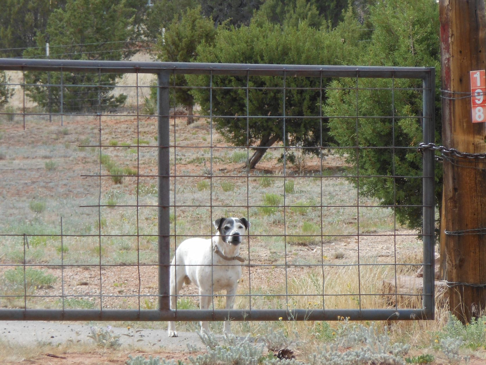
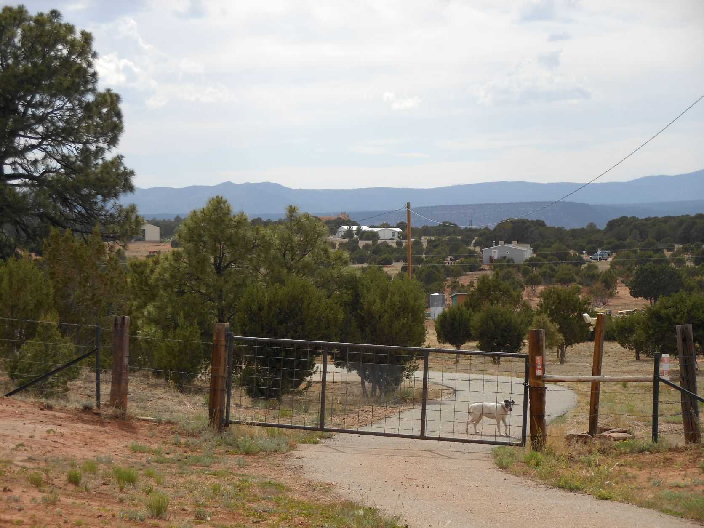
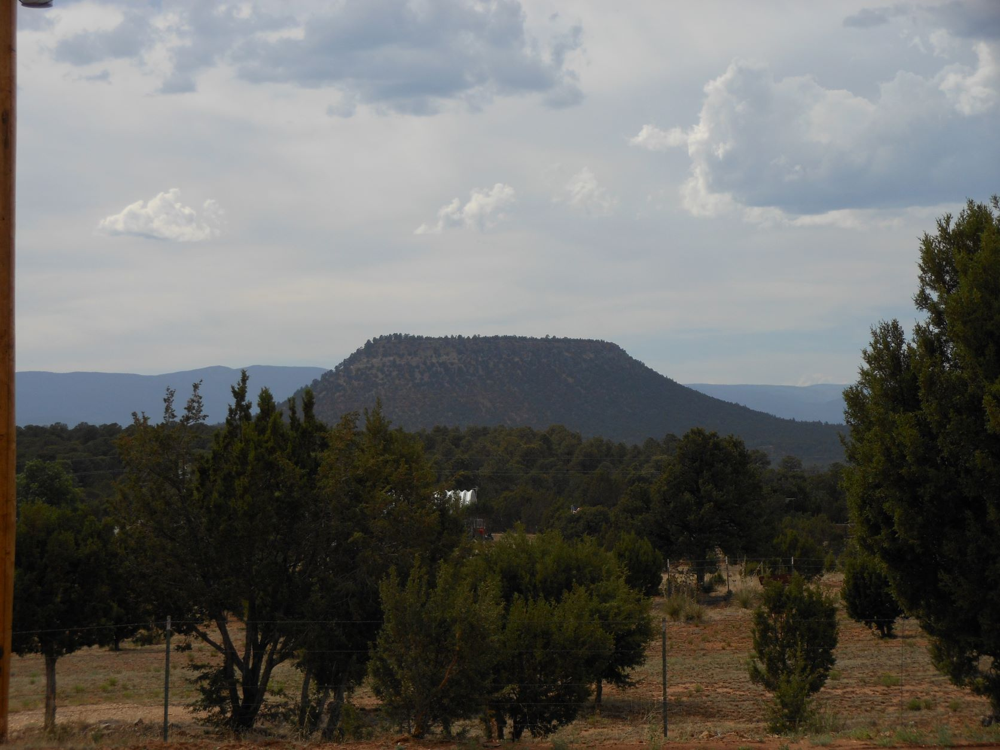
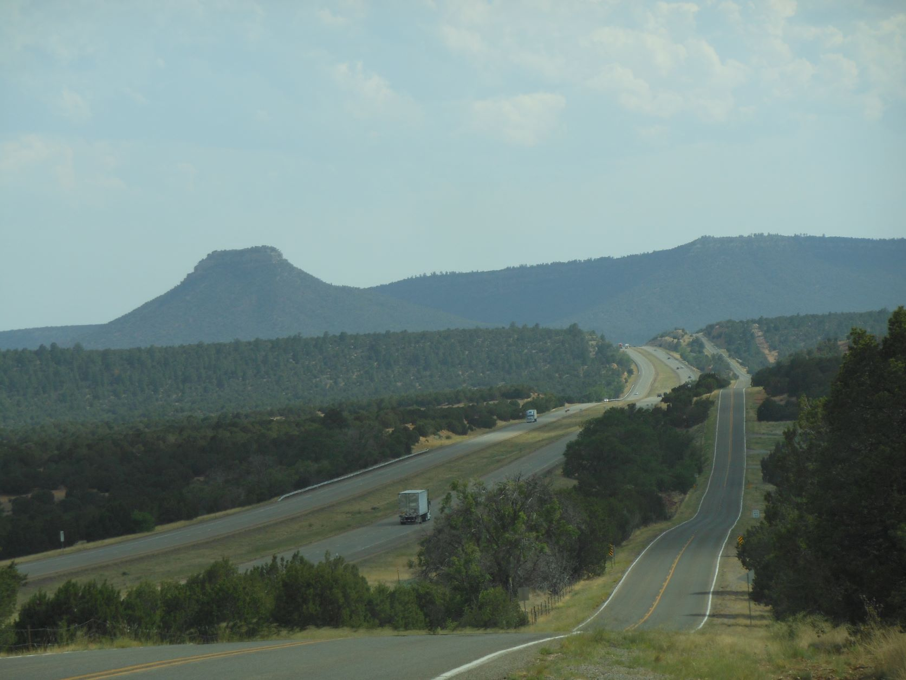
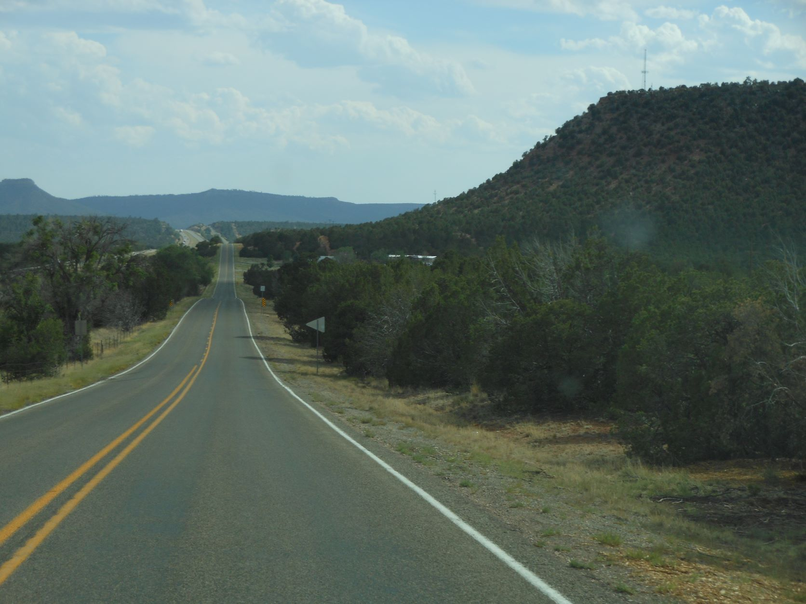

June 13, 2012 - Road to Santa Fe, NM

The fence, the chain, the dog... - Road to Santa Fe, NM

He wants to say "Hi". Or he wants to keep strangers away... - Road to Santa Fe, NM

Mesa - road to Santa Fe, NM

I40 to the left - Route 66 to the right - road to Santa Fe, NM

The ribbon to the horizon - road to Santa Fe, NM